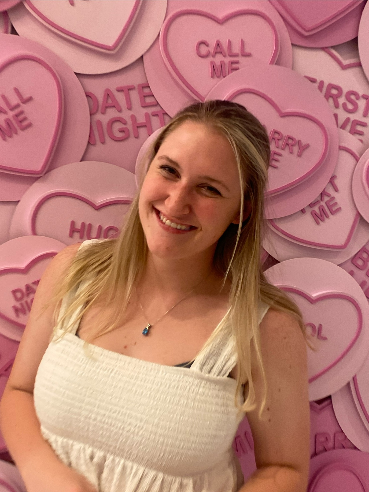

Hello! I'm Caitlyn Gilliam, a psychology and criminal justice major. I enjoy building projects that highlight my skills in Creativity, Grit, Determination, and Hardwork.
My favorite project I have ever done was in creative writing. I was able to create an essay entirley out of poems. I enjoyed this because it was rooted in inner reflection upon ones self. This I feel is the most important thing one can do, and it was eye opening for me.
My junior year of highschool I got assigned to write an essay about a psychological type of love story. I was able to choose my great grandparents, and tell a story that meant the world to me. This was one of my most favorite memories, and it was very eye opening to what kind of a time they had lived in.
Email: cgilliam3@leomail.tamuc.edu